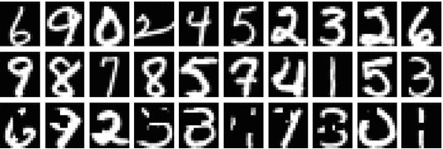

-
Machine Learning
Python
 -
A handwritten digit recognition (HDR) package. Specifically I built from scratch a generic full-connected neural network powered by mini-batch technique. Trained it with MNIST database and resulted in 96 percent of correctness for HDR. Online demo will come out soon. Code is now available on Github. Plan to make it online for user's experiment
-
Handwritten Digit Recognition
-
Parser
Servlet
JDBC
Java

-
A unit calculator developed by Xuanpei Ouyang and me. This is built as a parser and interpreter. Specifically, users can define new units, simplify expressions, and do calculations on numbers with units. I deploy this software to the server side with database for user-defined units. Try it here! Or view code on Github
-
Unit Calculator

-
JavaFx
GUI
Java

-
A special version of the game 2048 that the users can specify the size and shape of the board. I armed it with a beautiful GUI written in JavaFx. View source code and play it here.
-
The Board Game 2048+
-
Game Theory
Python
-
A classic combinatorial game. Easy rules and very interesting. You can play it even without a GUI. I implemented the wining strategy algorithm for this game. View my code here.
-
The Conbinatorial Game Nim
-
Optimization
Equations Solver
MATLAB

-
A package for linear and nonlinear optimization, with a tool for solving nonlinear equations. I implemented Simplex Method for linear programming and modified Newton Method for nonlinear problems. Code is on Github and Matlab Compiler Runtime Evironment (MCR) or Octave is needed to run it.
-
Optimization Tools & Equations Solver
-
MongoDB
Recommendation System

-
A website created together with Han Min Naing, Chenxing Ouyang (Alex), and Kristine Khanh Tran. A social network designed for hackerthon participants so that people can know what other people plan to do in coming up hackathons and make new friends of similar ideas. Planned to integrate a project recommender system based on text mining of the project description. Work in progress.
-
HackStatus.io